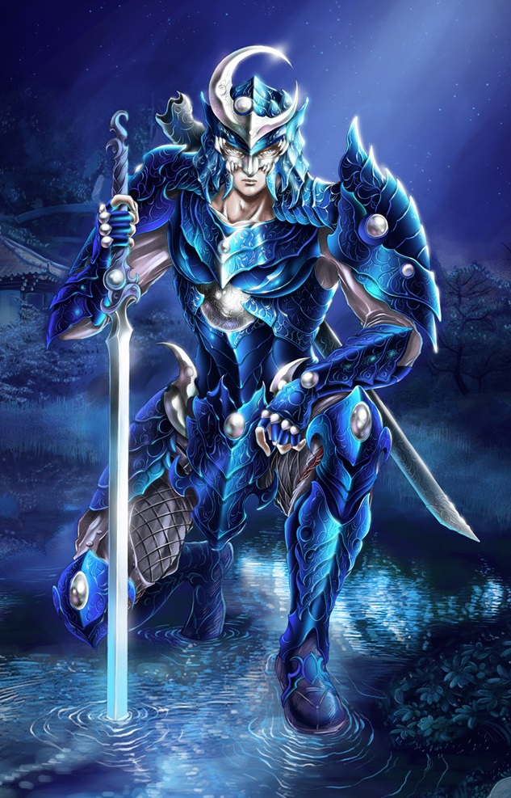

Classes > Knights > Moon Knight
Good, non-Chaotic only. Also known as Samurai, Lunarian Guard, Moon Knight, Lunatic Knight, Silver Knight or Space Sailor.
A member of the secret Lunatic Order who wields soul magic and evokes purifying moonlight to guard the balance of the afterlives. Drow, Dragonkin, Ogres, Orcs, Goblins and Trolls cannot be Moon Knights.
Though senior Moon Knights reserve their time for plane-traveling missions to ensure the safety of the cosmos, trainees are required to prove their mettle by living out ascetic lives on Dunia as traveling warrior-monks. They must travel to the Lunarian Kingdom on the moon for their promotion, and are forbidden from bringing harm to Good creatures. They are also conversational in Elven and Dwarven, and have advantage on Judge skill checks.
Level 2: Moon Knights may cast Illusion and Divination spells as a Wizard of half their level, and gain proficiency with longswords
Level 5: Moon Knights gain the ability to permanently see the true forms of all things, as well as seeing through invisibility and magical trickery.
Level 7: Moon Knights gain the ability to dispel curse once a week and warp space once per level daily.
Level 10: Being promoted from Trainee to Aspirant, the essence of moonlight itself begins to answer to the Knight's will. They may expend any of their spell slots to cast a moonlight variant of the Cleric's harming or healing spells of the same slot level. Their bonus melee damage is also dealt as Holy or Fire. (their choice)
Level 15: Once per day, Moon Knights may cast mass sanctuary, forbidding any creature within a 20ft area from bringing harm to any other creature. They may meditate for one hour to transform their bodies into pure light, becoming incorporeal until dawn and gaining the ability to teleport anywhere moonlight touches.
|
Level |
Magic Slots |
Bonuses |
Level |
Magic Slots |
Bonuses |
|
1 |
- |
Taunt |
11 |
4/3/2 |
Barony, Doublestrike |
|
2 |
2 |
Illusion/Divination, swordplay |
12 |
4/3/3 |
Feat |
|
3 |
2 |
- |
13 |
4/3/3 |
- |
|
4 |
3 |
Feat |
14 |
4/3/3/1 |
- |
|
5 |
3 |
Bash, Sight Beyond Sight |
15 |
4/3/3/1 |
Crit at 18, Mass Sanctuary, Shift |
|
6 |
4/2 |
- |
16 |
4/3/3/2 |
Feat |
|
7 |
4/2 |
Dispel Curse, Blink |
17 |
4/3/3/2 |
Disarm |
|
8 |
4/3 |
Feat |
18 |
4/3/3/3/1 |
- |
|
9 |
4/3 |
- |
19 |
4/3/3/3/1 |
Riposte, Feat |
|
10 |
4/3/2 |
Bend Moonlight |
20 |
4/3/3/3/2 |
- |